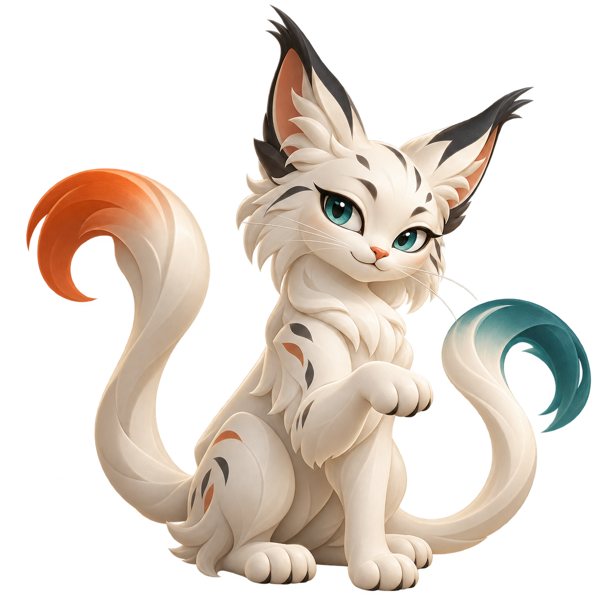

<!doctype html>
<html lang="en"><meta charset="utf-8"><title>DeskMux social preview</title>
<style>
*{box-sizing:border-box}body{margin:0;width:1200px;height:630px;background:#f4f1e9;color:#173a35;font-family:Arial,sans-serif;overflow:hidden}
main{position:relative;width:100%;height:100%;padding:48px 58px;background:radial-gradient(ellipse at 84% 45%,#d7e9df 0,transparent 49%)}
header{display:flex;align-items:center;gap:12px;font-size:25px;font-weight:700}header img{width:36px}header span{font-size:11px;letter-spacing:2px;font-weight:400;margin-left:16px;border-left:1px solid #a5b7ae;padding-left:24px}
h1{font-size:76px;letter-spacing:-4px;line-height:.99;margin:34px 0 18px;font-weight:600;position:relative;z-index:2}em{font-family:Georgia,serif;font-weight:400;color:#286f65}p{font-size:21px;line-height:1.45;max-width:610px;margin:0;color:#47655e}
.mascot{position:absolute;right:3px;top:94px;width:455px;filter:drop-shadow(0 25px 22px #294b3822)}
.flow{display:flex;align-items:center;gap:13px;margin-top:30px;width:630px}.mac{border:1px solid #b2c6bb;border-radius:14px;padding:14px 18px;display:flex;align-items:center;gap:13px;font-size:15px;background:#ffffff66}.mac.active{background:#286f65;color:white;border-color:#286f65}.mac svg{width:40px;height:30px}.mac small{display:block;font-size:10px;letter-spacing:1px;margin-top:5px;opacity:.8}.arrow{font-size:28px;color:#286f65}.chips{font-size:11px;letter-spacing:1.2px;margin-top:23px;color:#4b6860}footer{position:absolute;bottom:29px;left:58px;right:58px;display:flex;justify-content:space-between;font-size:12px;letter-spacing:1px;color:#49665d;border-top:1px solid #bdcabe;padding-top:18px}
</style>
<main><header>DeskMux <span>OPEN SOURCE · FOR macOS</span></header>
<h1>Two Macs.<br>One <em>flow.</em></h1>
<p>Your mouse crosses the desk.<br>Your keyboard and clipboard come along.</p>

<div class="flow"><div class="mac active"><svg viewBox="0 0 48 36" fill="none" stroke="currentColor" stroke-width="1.6"><rect x="3" y="2" width="42" height="25" rx="2"/><path d="M24 27v7m-9 0h18"/></svg><div>Mac Studio<small>INPUT IS HERE</small></div></div><span class="arrow">↔</span><div class="mac"><svg viewBox="0 0 48 36" fill="none" stroke="currentColor" stroke-width="1.6"><rect x="7" y="3" width="34" height="24" rx="2"/><path d="M7 27 2 32h44l-5-5"/></svg><div>MacBook<small>ACROSS THE DESK</small></div></div></div>
<div class="chips">NATIVE LOGITECH HANDOFF &nbsp; / &nbsp; KEYBOARD FOLLOWING &nbsp; / &nbsp; TEXT CLIPBOARD</div>
<footer><strong>deskmux.dionlabs.ai</strong><span>A SMALL UTILITY. A BETTER DESK. &nbsp; ↗ DION LABS</span></footer></main></html>
